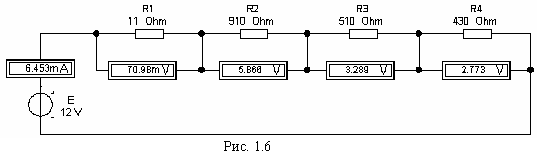

Задание 2а. При выполнении работы в среде EWB или в среде MS8 Education: открыть панель источников энергии и "перетащить" идеальный источник постоянного напряжения Е, затем из панели базовых компонентов "перетащить" четыре резистора, из панели индикаторов – амперметр и четыре вольтметра, из панели приборов - мультиметр.
Установить в открывающихся диалоговых окнах (после двойного щелчка мышью на изображении элемента или прибора) следующие значения параметров элементов и приборов:
- ЭДС источника напряжения Е = N (в вольтах), где N – номер записи фамилии студента в учебном журнале группы;
- обозначение (Label) резисторов и значение сопротивлений (Value): R1 = N; R2 = 2N; R3 = 3N; R4 = 4N;
- (оставить по умолчанию) режим DС работы приборов и их внутренние сопротивления: 1 мОм для амперметра и 1 МОм для вольтметров;
- измеряемую величину Ω мультиметра; режим работы – постоянный ток; ток измерения 0,1 А.
Соединить параллельно между собой сопротивления R1 и R3; R2 и R4, и измерить мультиметром (прямой метод) сопротивления разветвлений резисторов. Полученные значения сопротивлений занести в табл. 1.1 для сравнения с значениями, вычисленными по формулам:
R1,3 = R1R3/( R1 + R3) и R2,4 = R2R4/( R2 + R4).
Собрать схему (см. рис. 1.6) и установить значения параметров элементов и приборов согласно варианту задания. Запустить программу EWB или программу MS8 Education и измерить (косвенным методом - методом вольтметра-амперметра) сопротивления резисторов. Результаты измерений и расчетов занести в табл. 1.1.

Таблица 1.1
Измерено |
R1,3, Ом | R2,4, Ом | U1, мB | U2, мB | U3, мB | U4, мB |
| I1, мА | I2, мА | I3, мА | I4, мА | |||
Вычислено |
R1,3, Ом | R2,4, Ом | R1, Ом | R2, Ом | R3, Ом | R4, Ом |
Задание 2б. При выполнении работы в среде MS8SD: открыть файл Lr1-2.ms8, установить значение сопротивления резистора R3, режим Ω работы мультиметра и измерить сопротивление резистора R3.